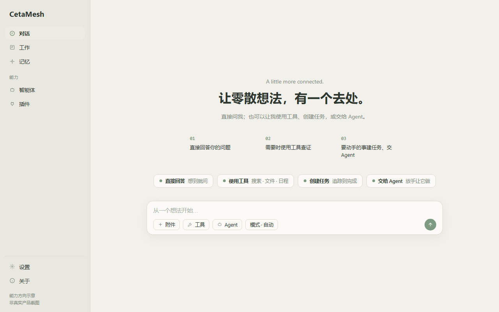
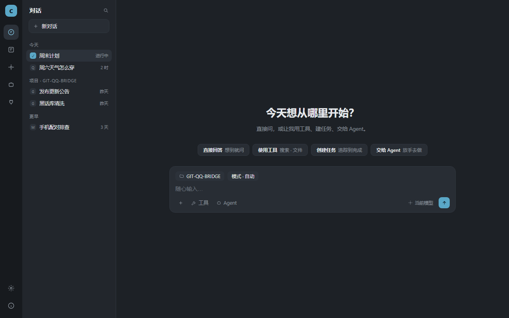
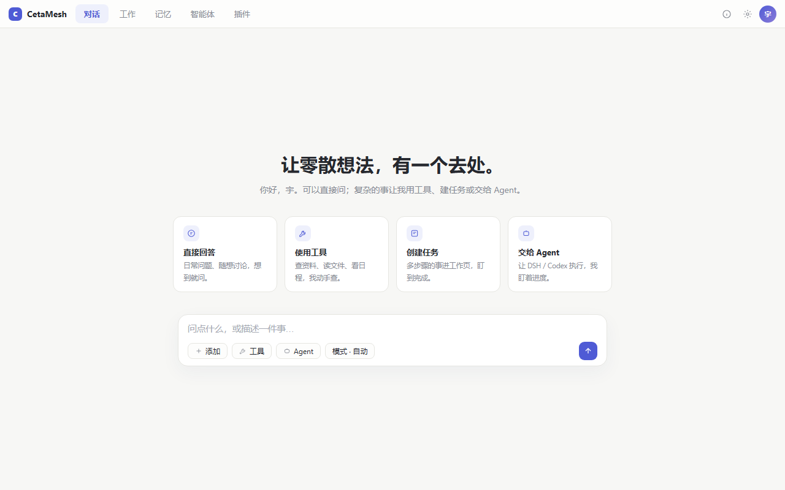
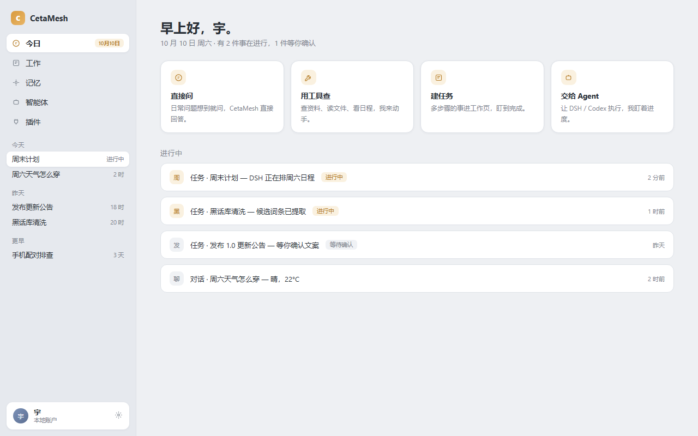
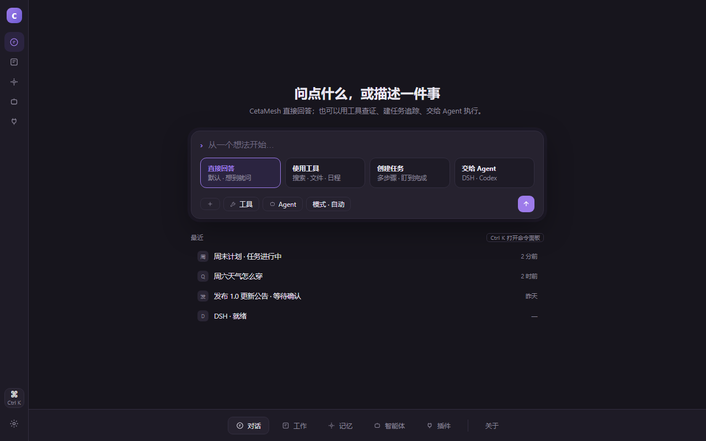

单一左侧栏（对话/工作/记忆 + 智能体/插件 + 设置/关于）。首页居中问候 + 01/02/03 协作步骤示意；对话流内嵌「协作过程」步骤卡、任务行、Agent 行。暖纸鼠尾草浅色。

56px 图标栏 + 随页面变化的第二列（会话列表按日/项目分组、任务列表、Agent 列表、插件列表），主区保持大画布。Composer 带上下文 chips，模型收右下角。深色蓝灰。

无侧栏；顶栏五个标签 + 右上头像/设置。能力四卡直接上首页；会话右侧固定「过程面板」Dock 实时呈现 工具活动/Agent/任务 三分组；插件二级与设置均为模态。浅色靛蓝。

首页是「今日」仪表（快速开始四卡 + 进行中活动流）；会话按日分组直接住进侧栏；对话顶部有「脉络条」（记忆·任务·Agent 关联）；工作页为四列看板。冷灰蓝 + 琥珀。

最小 chrome：极细栏 + 底部 Dock + Ctrl K 命令面板；Composer 即路由器（意图四卡内嵌输入框下方：直接回答/使用工具/创建任务/交给 Agent）；工具·Agent·任务状态以胶囊行进对话。深色紫罗兰。